name: inverse layout: true class: center, middle, inverse --- # Creating docker containers ## from Dockerfiles to automated builds ### ~60min --- layout: false ##<span style="color:purple">Outline</span> - ### Learning objectives - ### Introduction - ### Exercises --- ## <span style="color:purple">Learning objectives</span> - ### Dockerfiles - ### docker build - ### automated builds -- ## <span style="color:purple">Requirements</span> - ### Your computer: `Docker` - ### You: `shell` / `Terminal` --- name: inverse layout: true class: center, middle, inverse --- # Introduction --- layout: false ### <span style="color:purple">Docker - there and back again</span> - ### so far, we (hopefully) got to know how *docker* works, how *containers* can be downloaded, used and managed -- - ### but how are *docker containers* actually created and shared in the first place? -- - ### how can different programs be installed? -- - ### how are locally created *docker containers* shared? --- ### <span style="color:purple">Docker containers - the creation</span> - ### when it comes to creating *docker containers*, two essential parts are relevant: -- - ### a *Dockerfile* -- - ### the `docker build` command --- ### <span style="color:purple">Docker containers - the creation</span> - at the beginning there was a *Dockerfile*... - a *Dockerfile* is a textfile that contains a mixture of `docker build` and *bash* commands -- - let's create a new directory on our desktops called `my_first_docker` and in it an empty textfile called `Dockerfile` ```bash mkdir Desktop/my_first_docker && touch Desktop/my_first_docker/Dockerfile ``` -- - open `Dockerfile` within the terminal using e.g. `nano` or `vim` or the *text editor* of your choice (personal favorites: [atom](https://atom.io/) or [sublime](https://www.sublimetext.com/)) 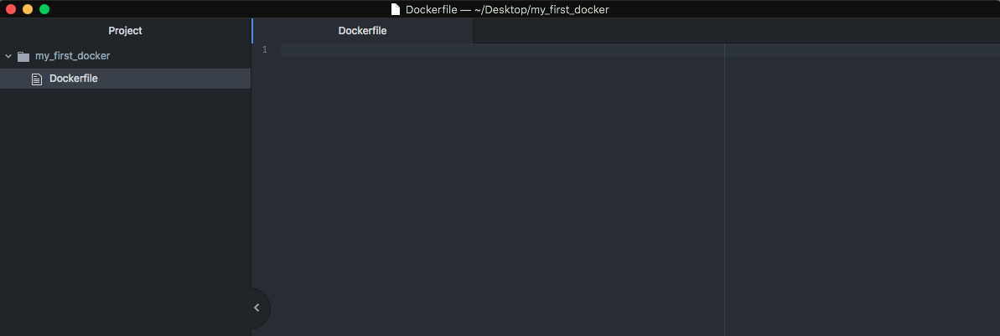 --- ###<span style="color:purple">Docker containers - the creation</span> - at the beginning there was the `base`, i.e. the underlying OS -- - we're gonna use `neurodebian` to facilitate subsequent installation processes: ```bash FROM neurodebian:stretch-non-free ``` -- - next, we specify that the installation of packages, programes, etc. is done non-interactively, i.e. we're not asked to approve each piece of software ```bash ARG DEBIAN_FRONTEND="noninteractive" ``` -- 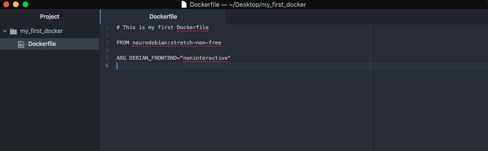 --- ###<span style="color:purple">Docker containers - the creation</span> - additionally, we set the *encoding* and *startup.sh* of our OS: ```bash ENV LANG="en_US.UTF-8" \ LC_ALL="en_US.UTF-8" \ ND_ENTRYPOINT="/docker/startup.sh" ``` 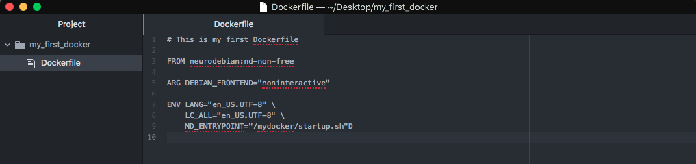 --- ###<span style="color:purple">Docker containers - the creation</span> - with that we already have enough information to build our first *docker container* -- - in order to do so, we need to run the `docker build` command: ```bash docker build ``` -- - providing it with a name via the `-t` flag ```bash docker build -t myfirstdocker ``` -- - pointing it to the `directory` where our `Dockerfile` is stored ```bash docker build -t myfirstdocker Desktop/my_first_docker ``` --- ###<span style="color:purple">Docker containers - the creation</span> ```bash docker build -t myfirstdocker Desktop/my_first_docker ``` 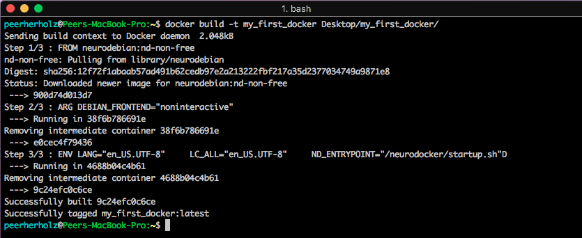 -- - as you can see, the steps we defined in our *Dockerfile* are executed step by step, comparable to `docker pull` --- ###<span style="color:purple">Docker containers - the creation</span> - the following lines let you know that the *Docker container* was build and tagged ```bash docker build -t myfirstdocker Desktop/my_first_docker ```Successfully built 9c24efc0c6ce Successfully tagged my_first_docker:latest ``` -- - using `docker images` we now see our newly created *Docker container* <img src="images/docker_build_example_2.png" width="100%" /> -- - additionally, the required *base image* `neurodebian:nd-non-free` is pulled and stored --- ### <span style="color:purple">Docker containers - the creation</span> - right now, our container only has very limited functionality, as it's very basic in nature -- - hence, let's install some other useful packages and programs, which in most "linux OS" is done through `apt-get`, for example `apt-utils`, `bzip2`, `ca-certificates`, `curl`, `locales`, `nano` and `unzip`, as well as some `git` related stuff ```bash RUN export ND_ENTRYPOINT="/neurodocker/startup.sh" \ && apt-get update -qq \ && apt-get install -y -q --no-install-recommends \ apt-utils \ bzip2 \ ca-certificates \ curl \ git \ git-annex-standalone \ git-annex-remote-rclone \ locales \ nano \ unzip \ ``` -- - from this point onwards, *Dockerfiles*, thus the creation of *docker containers* are almost identical to setting up any other linux OS, e.g. using `apt-get` or setting environments --- ### <span style="color:purple">Docker containers - the creation</span> - regarding our `apt-get` endeavors, we need some further settings that are related to the *encoding*, *environment* and *startup.sh* -- - our complete command looks as follows: 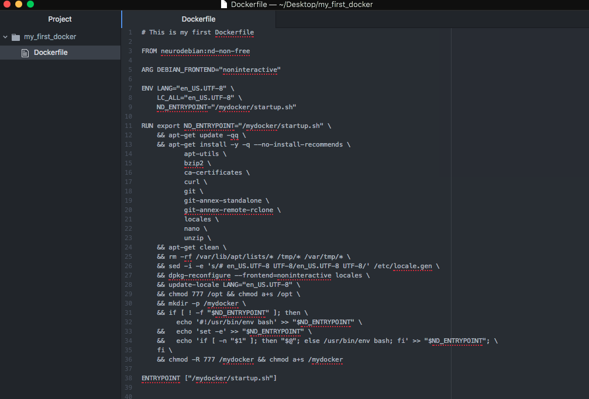 --- ### <span style="color:purple">Docker containers - the creation</span> - let's recreate our *Docker container* again: ```bash docker build -t myfirstdocker Desktop/my_first_docker ``` - as the output is quite long starts to be quite long, there will be no more pics from now on (sorry) -- - using `docker images`, we see that the new container was created successfully 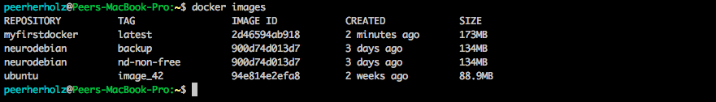 --- ### <span style="color:purple">Docker containers - the creation</span> - if we now run our newly created *Docker container*, we see, that we can use the packages and modules we just installed: ```bash docker run -it --rm myfirstdocker ``` 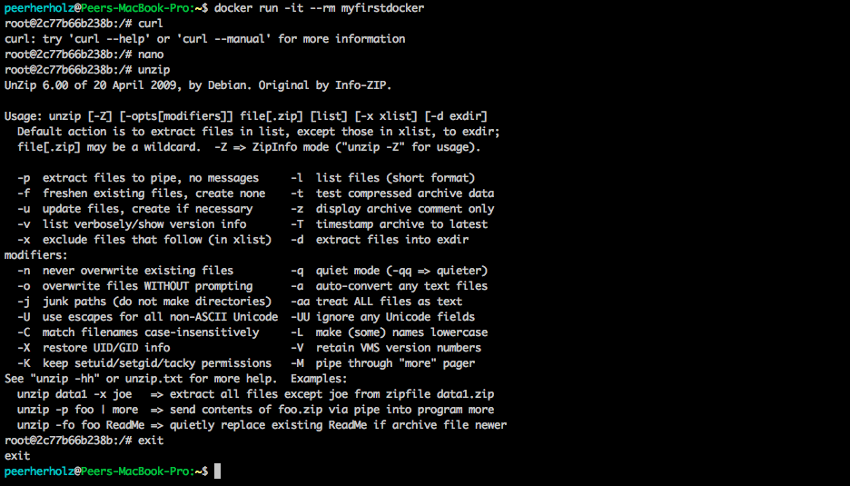 --- ### <span style="color:purple">Docker containers - the creation - even more fun</span> - as we're interested in processing different kinds of data using e.g., a variety of analyses, we should include some handy tools to do so -- - as many (if not all) of you know, one of the best tools to process data, from gathering to analyzing to visualizing is [Python](https://www.python.org/) - so, let's put python in our *Docker container* by utilitzing `miniconda` and `conda` which allow us to define specific *python environments* through amazing *package managers* -- - we're going to install `python 3.6` and some essential *modules* for classic & neuroimaging data processing: `pandas`, `jupyter`, `nipype`, `mne`, `nibabel`, `nilearn`, as well as `datalad` to get and share data - please note, that we don't have to specifically install *modules* like `scipy` or `numpy` as they're already part of the `miniconda scientific python` environment --- ### <span style="color:purple">Docker containers - the creation - even more fun</span> - this how the respective part of our *Dockerfile* should look like now: 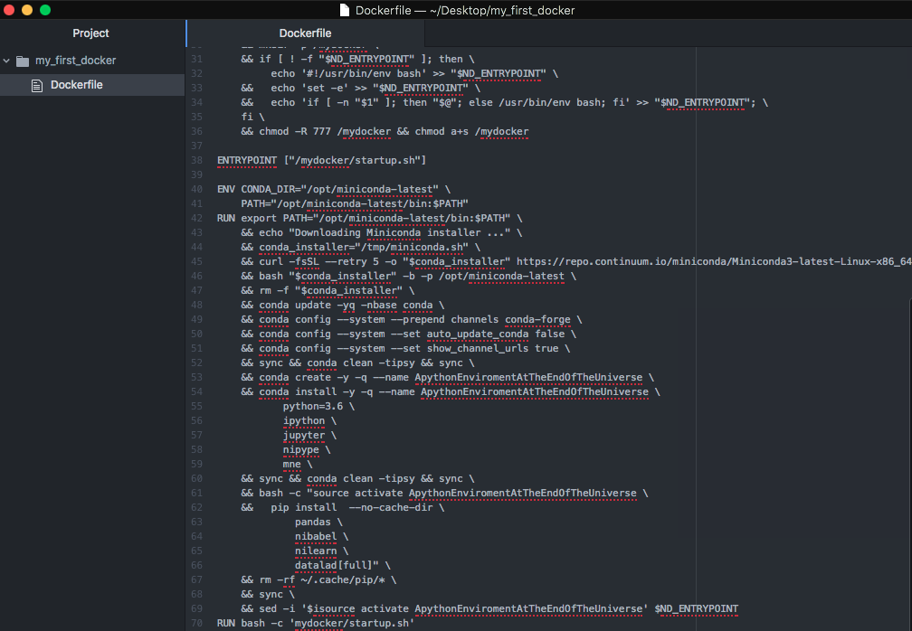 --- ### <span style="color:purple">Docker containers - the creation - even more fun</span> - you guessed it right: time to re-build our *Docker container* ```bash docker build -t myfirstdocker Desktop/my_first_docker ``` -- - running our *Docker container*, we're now able to use `python` and the installed `modules` 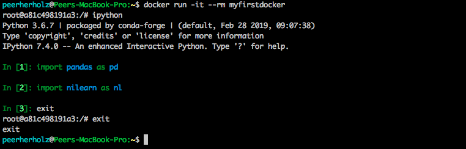 --- ### <span style="color:purple">Docker containers - the creation - even more fun</span> - if we check our *Docker containers* using `docker images` we notice two things: 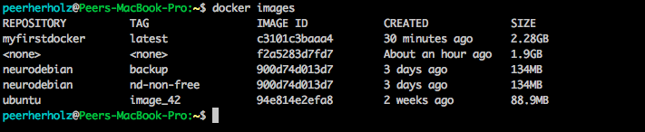 -- - previous instances of the *container* are untagged and are not overwritten - *note*: updating existing *Docker containers* does not overwrite nor delete its previous instances, hence make sure to delete those as soon as you ensured the new *container* is working as intended to prevent unncessary storage usage -- - our *Docker container* increased its size by an order of magnitude - *note*: always keep track of the packages, programes, etc. you install and keep track of tremendously large software in order to keep your *Docker container* as small as possible --- ### <span style="color:purple">Docker containers - the creation - the big easy</span> - the fitting compilation of the whole *Dockerfile* appears very complex and prune to errors, as well as takes a lot of time and googling (especially in the beginning) - you might wonder: Isn't there a more sufficient, faster and easier way of composing *Dockerfiles*? -- - well, say no more and meet [Neurodocker](https://github.com/kaczmarj/neurodocker), a *Docker container* that targets the creation of *Docker containers*, e.g., *Dockerception* -- - even though, [Neurodocker](https://github.com/kaczmarj/neurodocker) was designed for (you might guessed it already) *Docker containers* to utilize in the realm of neuroscience, it's also a very handy tool for any other research field, as especially the basic setup is done very quickly and hustle free -- - let's check how we can re-create our *Dockerfile* using [Neurodocker](https://github.com/kaczmarj/neurodocker) --- ### <span style="color:purple">Docker containers - the creation - the big easy</span> - at first we need to get the [Neurodocker](https://github.com/kaczmarj/neurodocker) *container* ```bash docker pull kaczmarj/neurodocker:0.4.3 ``` -- - all we have to do now is run [Neurodocker](https://github.com/kaczmarj/neurodocker), providing the necessay input arguments beginning with stating that we want to create a *Docker container* and that we want to use `neurodebian:nd-non-free` as a *base*: ```bash docker run kaczmarj/neurodocker:0.4.3 generate docker \ --base=neurodebian:nd-non-free \ ``` -- - next, we indicate that we want to use `apt` as a package manager, furthermore specifying the packages to install: ```bash docker run kaczmarj/neurodocker:0.4.3 generate docker \ --base=neurodebian:nd-non-free \ --pkg-manager=apt \ --install git git-annex-standalone git-annex-remote-rclone nano \ ``` --- ### <span style="color:purple">Docker containers - the creation - the big easy</span> - we're only missing the `python` parts...: ```bash docker run kaczmarj/neurodocker:0.4.3 generate docker \ --base=neurodebian:nd-non-free \ --pkg-manager=apt \ --install git git-annex-standalone git-annex-remote-rclone nano \ --miniconda \ conda_install="python=3.6 ipython jupyter nipype mne" \ pip_install="pandas nibabel nilearn datalad[full]" \ create_env="ApythonEnviromentAtTheEndOfTheUniverse"\ activate=true ``` -- - now, we've all we need, thus we run the [Neurodocker](https://github.com/kaczmarj/neurodocker) *container*, parsing the output to file called *NeuroDockerfile* on our Desktop ```bash docker run kaczmarj/neurodocker:0.4.3 generate docker \ --base=neurodebian:nd-non-free \ --pkg-manager=apt \ --install git git-annex-standalone git-annex-remote-rclone nano \ --miniconda \ conda_install="python=3.6 ipython jupyter nipype mne" \ pip_install="pandas nibabel nilearn datalad[full]" \ create_env="ApythonEnviromentAtTheEndOfTheUniverse"\ activate=true > Desktop/NeuroDockerfile ``` --- ### <span style="color:purple">Docker containers - the creation - the big easy</span> - please go through the newly created `NeuroDockerfile`, comparing it to the one we created manually -- - as you can see, using [Neurodocker](https://github.com/kaczmarj/neurodocker) can save you a lot of time and stress -- - it's especially great to setup the basics of your *Docker container* -- - my workflow, for example, is to do the basics with [Neurodocker](https://github.com/kaczmarj/neurodocker) and fine-tuning manually -- - you can of course decide on either or a completely different way -- - e.g., one can also copy-paste the basic parts and just change respective other parts (python environment, etc.) --- ### <span style="color:purple">Docker containers - push it real good</span> - our *Docker container* is ready: coolio! -- - as want to enable open, reproducible and community driven science, we, of course, want to get our *Docker container* out there, but how do we do that? -- - in general, we have two options to do so: -- - first, we use the *export/import* functionality (`Docker save/load`) to share our *Docker container* locally via e.g., USB -- - second, we can use this thing called *internet* to share our *Docker container* on [Docker Hub](https://hub.docker.com/) -- - if nothing *sensitive* is in your *Docker container*, it is **highly** recommend to share it via [Docker Hub](https://hub.docker.com/) --- ### <span style="color:purple">Docker containers - push it real good </span> - as most things *Docker*, getting locally created *containers* to [Docker Hub](https://hub.docker.com/) is rather easy -- - essentially, we need to lines of code, one to tag our *Docker container* and one to actually `push` it --- ### <span style="color:purple">Docker containers - push it real good </span> - we already know the `tag` *command*, but in the context of `pushing` *Docker containers* we need to adapt it a bit, such that we tag a given *Docker container*, including our `docker id` ```bash docker images ``` 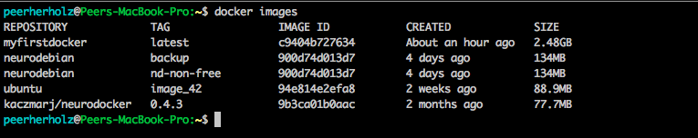 ```bash docker tag image-id yourhubusername/container:tag ``` 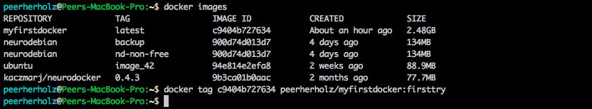 --- ### <span style="color:purple">Docker containers - push it real good </span> - now, we can simply use the `push` *command* to send our freshly tagged *Docker container* to [Docker Hub](https://hub.docker.com/) ```bash docker push yourhubusername/container:tag ``` 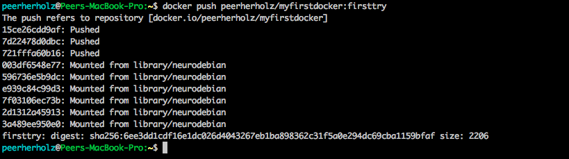 --- ### <span style="color:purple">Docker containers - push it real good </span> - once completely and successfully `pushed`, we find our *Docker container* on our [Docker Hub](https://hub.docker.com/) 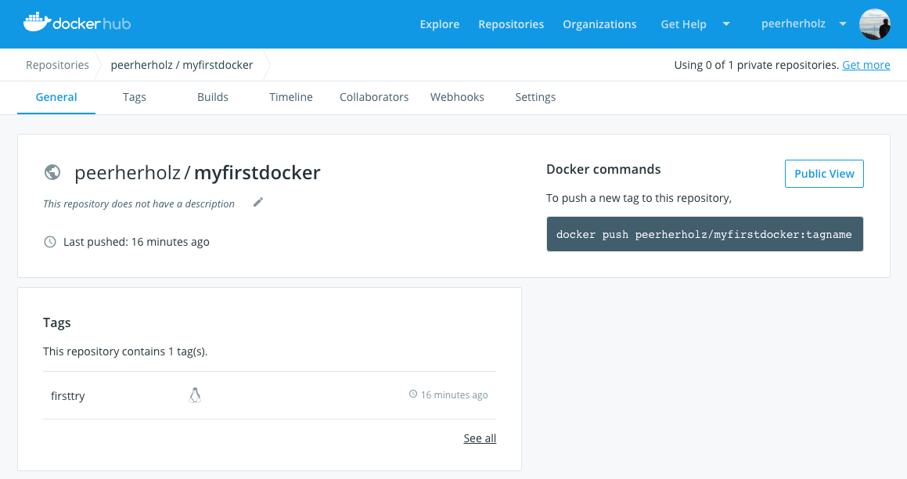 --- ### <span style="color:purple">Docker containers - push it real good </span> - with regard to reproducible, in terms of version controlled, science, there's actually another cool way to `build` and `push` *Docker containers* -- - *docker* provides so called *automated builds* which `build` and `push` your *Docker container* directly and automatically from a *GitHub* repository -- - the respective process is highly customizable and of course completely free -- - all you need: a `docker id` and a *GitHub* account - as usual, the setup is super easy and straightforward, as we just need to create a new *GitHub repository* in which we store our *Dockerfile*: - please create a new *Github repository* called `docker_workshop` - upload your *Dockerfile* to this *repository* --- ### <span style="color:purple">Docker containers - push it real good </span> - your newly created *GitHub repository* should look somthing like this: 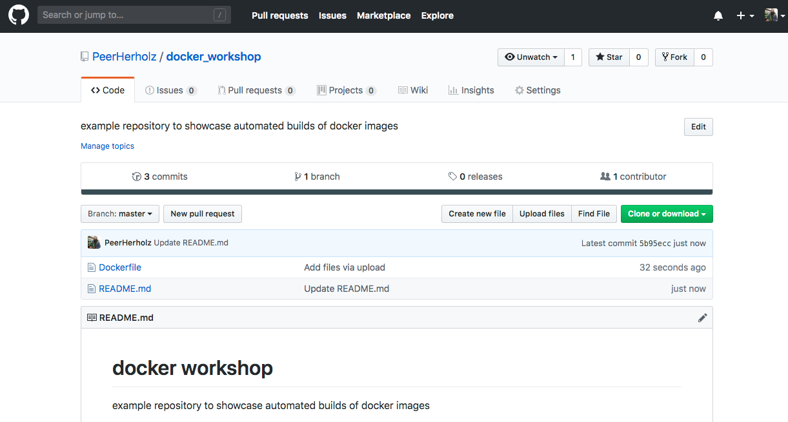 --- ### <span style="color:purple">Docker containers - push it real good </span> - now, on [Docker Hub](https://hub.docker.com/), go to your just uploaded *Docker container* and within that, click on `builds` 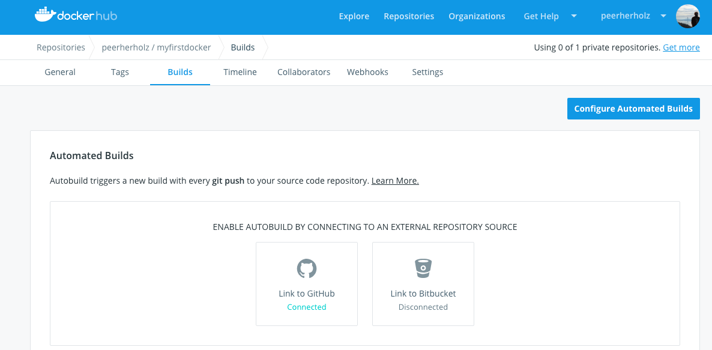 -- - next, click on `Configure automated builds` --- ### <span style="color:purple">Docker containers - push it real good </span> - we're now asked to indicate the *source repository* on *GitHub* and indicate some *build rules*, including automated tests, branch to build from, tag that should be applied, etc. 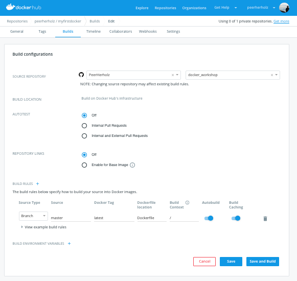 --- ### <span style="color:purple">Docker containers - push it real good </span> - after clicking on `save and build`, our *Docker container* is `build` automatically from our corresponding *GitHub repository* 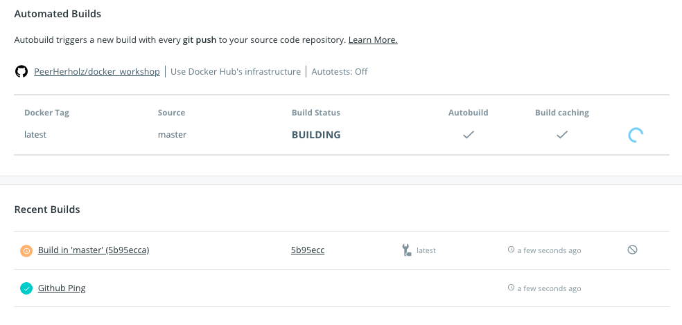 - depending on the size of your *Docker container* and the current traffic on [Docker Hub](https://hub.docker.com/), it might take a while -- - the cool thing is, that every `push` or `commit` to this *GitHub repository* triggers a new `build`, hence your *Docker container* remains nicely up to date --- ### <span style="color:purple">Docker containers - creating and pushing - a recap</span> - you'll get email notifications wrt the currently running processes, also letting you know that the *automated build* finished -- - this how the respective page on [Docker Hub](https://hub.docker.com/) should look like: 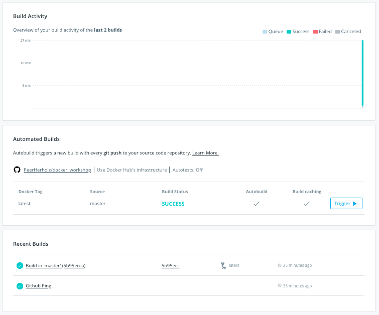 --- ### <span style="color:purple">Docker containers - creating and pushing - a recap</span> - creating and sharing *Docker containers* is achieved through three parts: a *Dockerfile*, the `build` command and the `push` command -- - *Dockerfiles* can either be created completely manually or supported by *neurodocker* -- - using `docker build`, the *Docker container* is created following the information in the *Dockerfile* ```bash docker build -t myfirstdocker path/to/directory/containing/Dockerfile ``` -- - once build, the *Docker container* needs to be tagged, including your `docker id` and subsequently `pushed` to [Docker Hub](https://hub.docker.com/) ```bash docker tag image-id yourhubusername/container:tag docker push yourhubusername/container:tag ``` -- - the `build` and `push` process can be automatized using *automated builds* -- - no matter how you created your *Docker container* and pushed it to [Docker Hub](https://hub.docker.com/), it's now available to everyone, which is awesome! --- name: inverse layout: true class: center, middle, inverse --- # Questions?